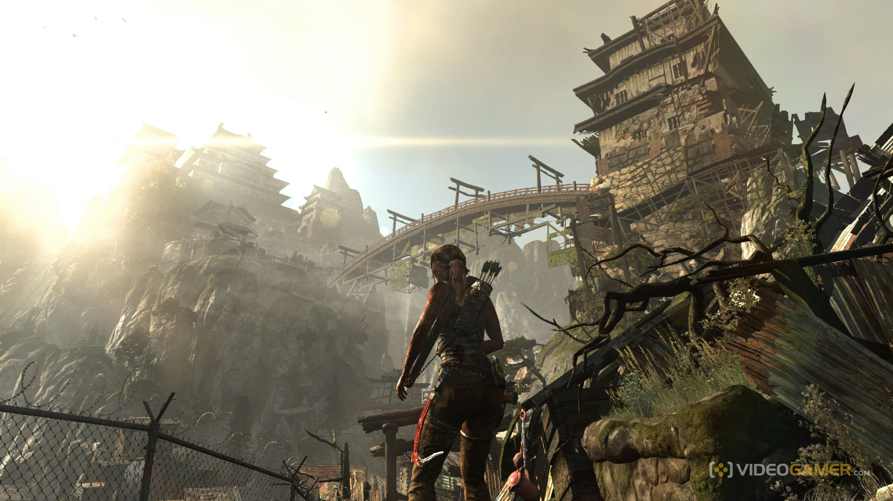
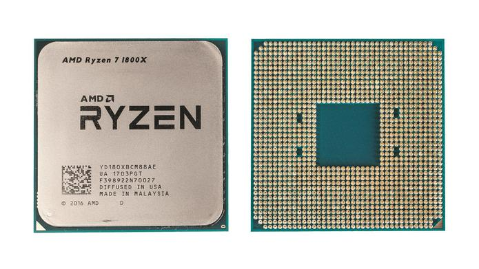

<nav>
  <div class="container-fluid custom-navbar">

  </div>

  <div class="custom-navbar-vertical"></div>
</nav>
  <div class="container component-section section1">
    <div class="component-section component-inside">
      
      
    </div>
  </div>
  <div class="container component-section section2">
    <div class="component-section component-inside">
      
      
    </div>
  </div>
